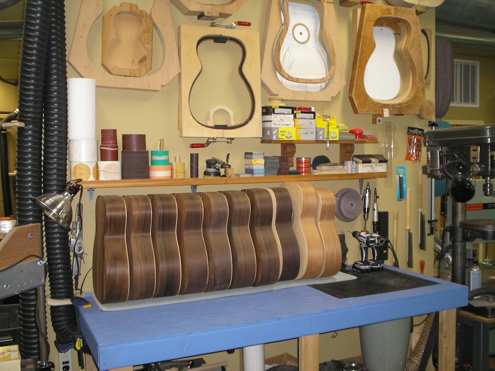

01
SELECCIÓN
Cada madera se elige por su carácter sonoro: densidad, resonancia y estabilidad. No hay dos piezas iguales.
- Cedro canadiense — tapas
- Palo santo — aros y fondo
- Ébano africano — diapasón
